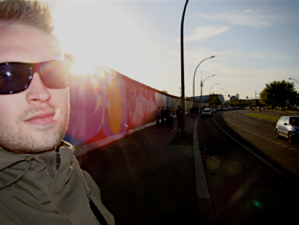

Berlin v1.0

Urban Life and War Memorials
I'm right now sitting in the copy-room at the institute printing nothing less than 10(!) copies of my thesis... one shouldn't think that it was necessary to hand in 10 printed copies in the 'modern age' of this internet-thingy - but in Heidelberg it is; of course there needs to be a printed version of all graduating students' thesis in all the libraries of the astronomy institutes as well as the university... I don't get it. But either way. I'm sitting here and keeping an eye on the process (to allow other people to squeeze their jobs in between mine) and therefore thought that I would bring you up to date with my doings.
From thursday to sunday I was in Berlin for the first time. As I explained earlier I felt kind of embarrassed not to have been to Berlin during my ~4 years in Germany. Hence, I gave myself a short trip there as reward for handing in my thesis. I have put some of the pictures I took there in my online gallery. The plan was basically to 'see the city by feet' as my grandma' has always told me is the only way to experience a city. The only thing besides a list of things to see I had planned was a lunch at a posh place to spoil my inner food-snob; but more about that later...
Thursday I left from Heidelberg in the morning, catch a train in Mannheim and arrived at Berlin main station 5 hours later. Annoying that I haven't done that before, 'cause it was really easy and convenient. I don't know why I got the impression that it was cumbersome to go from HD to Berlin - it is not! I was at the hotel around 15:30 but only checked-in change clothes and then hit the streets. I spent the rest of the day sight-seeing, including the Bundestag, the 'star-pillar', Brandenburger tor (in front of which I enjoyed a Berlin-born speciality in the form of a Currywurst mit Brötchen... not bad at all;), the memorial for the WWII jews, the Gedächtniskirche, etc. When I got back in the evening I was pretty dead so crashed on the bed right away.
Friday was the big day of Michelin food-snobbing. I had reserved a table at Fischers Fritz at 12:30 so spent the morning touring the city a bit more. Before I went to lunch I passed by Checkpoint charlie, deutsches dom and the mitte shopping malls. I was at the restaurant spot on and almost trembling of excitement (well not quite - but I was really looking forward to it ;). The restaurant was located at the Regent hotel and the girl seating me was so kind to take my jacket. The next waitress served me some sparkling water and some Fennel crackers that I could get my appetite started on - as if it was not already there - while I inspected the menu. I had already decided to go for the three course lunch witch turned out to be a great decision. During the lunch I had 5 different people servicing me so I really felt spoiled. Besides the 3 causes I ordered there were two inter-course snacks to make sure that I was not waiting too long. My lunch consisted of:
Snack: Fried salmon with green beans and chili-creme
Starter: Carpaccio of char with chicory-hazelnut salad and lime-vinaigrette
Main: Braised lamb neck with caramelized celeriac
Snack: Flambeed coconut 'marshmallow' with mint-cress sorbet
Dessert: Pudding of passion fruit, mousse of macadamia nuts and iced cardamom cacao
The descriptions above do by no mean whatsoever give justice to the quality, taste and appearance/presentation of the food - OH MY F****ING GOD IT WAS GOOD! This was definitely one of the best meals I have ever had. As I couldn't stop smiling while eating and still looked like the Joker when leaving the restaurant this really exposed my snobbyness for good and extravagant food. I'm not particularly embarrassed to say that I am really a sucker for posh food - especially when it is served and presented with honor and a smile. So if you feel the same way I can only recommend you to pass by Fischer Fritz if you are in Berlin. If it wasn't because Berlin in itself is an amazing city, this lunch could have made any boring city-visit top-notch any day. Spoil yourself there if you can!
After lunch I spent a couple of hours at the Pergamon museum. According to Lonely Planet it is the museum not to miss in Berlin. Well... yes the Pergamon altar and the Ishtar Gate were quite amazing, but besides that there was not many spectacular things to look at. But as I can still benefit from being a student I got in at reduced price, so have nothing to complain about. Afterwards I was roaming around the Spree river, the Alexanderplatz and the small and cosy shopping streets and backyards of the neighborhoods around there. As the sun was setting I went to the East side gallery; the longest stretch of still-standing Berlin wall which was decorated in the year after the wall fell. It's kind of a scary sight if one thinks of what it actually is, but the nice weather definitely made it a less 'traumatic' stroll. But it's hard not to think of all the sadness and sorrow the devision must have brought with it.
Saturday I started by enjoying the weather in the Chalottenburg castle gardens before I started hunting electronic music stores. I found a couple and was like a kid in a candy store... if it wasn't because everything was on LP (which is AWESOME - except that I don't have a record player... yet). Nevertheless, the stores and their electronic selection were outstanding and I really look forward to visit them again, after I get myself a record player ;)
In the after noon I passed by the 'official' Berlin wall memorial. This turned out to be much more scary than the East Side Gallery and really made the imagination run wild. It is God damn horrible what people are capable of doing in fear of other nations/religions/beliefs. One thing that surprised me about all the Wall stuff, i.e., checkpoint Charlie, the East Side Gallery as well as the wall memorial, is the extent of the whole thing. Yes you hear about the wall and the 'death strip' but it was not before I actually saw it, that I managed to actually understand how horrible the whole thing was. Luckily it's over now... at least in Berlin.
Saturday night I tried to find a place where they showed the champions league final between Bayern and Chelsea as I thought people would be all into germany VS england, but frankly it was pretty hard to find a place (besides take-way places and gambling halls) so in the end I went back to the hotel and watch the last part of he match there. Poor Bayern - the actually deserved to win it!
Before I returned to Heidelberg sunday just after lunch I managed to check out yet another part of the still standing Berlin Wall and managed to locate the location of Hitler's Führerbunker. Now it's just a parking lot but it was still kind of weird to stand there thinking of what orders came out of this place. I caught my train back to the south just after lunch as planned and was home a 7 after a great (and way to active if you ask my feet) extended weekend in Berlin. A city that I definitely will come back to in the future... and I'm apparently not the only dane that likes the city. I have never experience so many danish people on the streets of a city/place outside Denmark. Not even when I went to the 'classic' danish tourist meccas like Rhodes, Crete, or the Canary Islands. It was crazy they/we were everywhere - I ran in to more danish people than italians; I kid you not! I never thought that would happen. But I understand why. Berlin is awesome!
I think I'll stop here before the entry becomes too long... till next time.
Kasper
Wednesday, 23 May 2012
